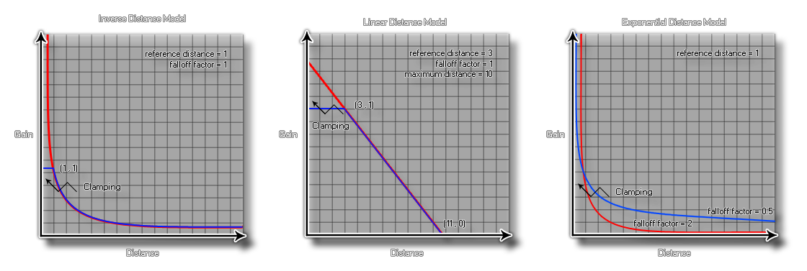

Pour ajouter plus de polyvalence au moteur audio, GameMaker Studio 2 vous permet de sélectionner le modèle d'atténuation qui convient à votre jeu. Ce modèle sera utilisé pour toutes les fonctions audio du jeu ou de l'application, et vous devez donc vous assurer que le modèle que vous choisissez est le bon, car chacun affectera la façon dont l'auditeur perçoit les sons que vous jouez à travers les émetteurs ou fonction audio_play_sound_at.
Lorsque vous définissez la chute dans votre jeu avec les fonctions appropriées, il y a trois arguments que vous devrez définir, et chacun est approprié à un modèle spécifique et affectera la façon dont le son final est "entendu" par le joueur en fonction de la distance que l'auditeur provient de la source. Les trois arguments sont:
- distance de référence - distance entre l'auditeur et la distance sous laquelle le volume du son devrait normalement diminuer de moitié avant d'être influencé par le facteur d'atténuation ou la distance maximale spécifiée.
- distance maximale: définit la distance à laquelle il n'y aura plus d'atténuation du son source. Cela peut être le point auquel le son n'est plus entendu ou le point auquel le volume sonore ne diminue plus en dessous du seuil minimum défini par le modèle choisi.
- facteur d'atténuation - Le facteur d'atténuation est utilisé dans l'atténuation de distance basée sur le modèle de distance inverse et définit le seuil minimum final pour un son avec atténuation.
Les modèles d'atténuation affectés par ces arguments sont représentés dans GameMaker Studio 2 par les constantes suivantes (le tableau montre également les calculs exacts utilisés):
Constant Fonction audio_falloff_exponent_distance
gain = (listener_distance / reference_distance) ^ (-falloff_factor)audio_falloff_exponent_distance_clamped
distance = clamp (listener_distance, reference_distance, maximum_distance)
gain = (distance / distance_distance) ^ (-falloff_factor)audio_falloff_inverse_distance
gain = reference_distance / (reference_distance + falloff_factor * (listener_distance - reference_distance))audio_falloff_inverse_distance_clamped
distance = clamp (listener_distance, reference_distance, maximum_distance)
gain = reference_distance / (reference_distance + falloff_factor * (distance - reference_distance))audio_falloff_linear_distance
distance = min (distance, distance maximale)
gain = (1 - falloff_factor * (distance - reference_distance) / (maximum_distance - reference_distance))audio_falloff_linear_distance_clamped
distance = clamp (listener_distance, reference_distance, maximum_distance)
gain = (1 - falloff_factor * (distance - reference_distance) / (maximum_distance - reference_distance))audio_falloff_none
gain = 1
Les graphiques suivants sont des représentations visuelles de la façon dont les constantes ci-dessus fonctionnent et affectent le son en cours de lecture: 
audio_falloff_set_model(model);
| Argument | La description |
|---|---|
| model | La constante utilisée pour définir le modèle d'atténuation. |
N/A
audio_falloff_set_model(audio_falloff_exponent_distance_clamped);
audio_play_sound_at(snd_Waterfall, x, y, 0, 100, 300, 1, true,
1);
Le code ci-dessus définit le modèle falloff et joue le son indexé dans la variable "snd_Waterfall", qui sera bouclée à sa position de pièce, avec une référence de chute de 100, une distance de chute de 300, un facteur de réduction de 1 et une faible priorité.